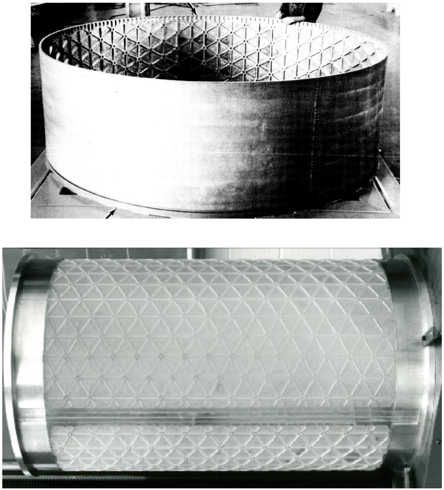

Motivation and History
Stiffened plates and shells appear throughout aerospace engineering: integrally stiffened panels, launch-vehicle barrels, ring-and-stringer shells, isogrids, orthogrids, sandwich sections, and lattice-like facesheets.
Detailed stiffener-by-stiffener models are the gold standard — and a slog. Rebuilding every rib for a trade study you will throw away next week is a poor use of a Tuesday. Equivalent-stiffness modeling smears the stiffeners into a single continuum ABD stiffness: you trade local detail for a small, auditable matrix that still gets the global membrane, bending, twisting, and shear story right.
Tensyl's core rule is:
Compute a local equivalent-stiffness model; embed that stiffness in geometry-specific shell kinematics.
This separation keeps the local homogenization problem small and auditable. A local ABD stiffness can be computed on a tangent plane, checked for validity, rotated, and then attached to a flat panel, cylindrical barrel, dome, or other surface.

Source: Nemeth, NASA/TP-2011-216882, figure 3; full citation in References.
Use Cases
Tensyl is intended for:
- early sizing of stiffened skins and shell sections;
- trade studies over stiffener pitch, height, orientation, and material;
- comparison of canonical grids such as unidirectional, orthogrid, isogrid, hexagonal, star, and sandwich-core cells;
- building solver-neutral stiffness artifacts for external workflows;
- creating reduced models for global stiffness studies.
Tensyl is not intended to hide the assumptions behind equivalent-stiffness modeling. Every homogenized result carries diagnostics and validity information because a local ABD stiffness is useful only when its assumptions match the structural question.
New to the vocabulary — "ABD stiffness," "tangent plane," "scale separation," "pitch"? The Terminology page defines each precisely and is worth a read before the Theory section.
Brief History
Equivalent-continuum modeling is older than the finite-element method, for the unmysterious reason that engineers needed answers before they had the compute to model every stiffener. The idea has aged well. Tensyl is a modern implementation of a long tradition, not a new invention with a better haircut.
Classical plate and shell theory supplied the language: membrane resultants,
bending resultants, transverse shear, and stiffness matrices. Reissner- and
Mindlin-type first-order shear-deformation theories promoted transverse shear
from an afterthought to an explicit part of the stiffness model. Laminated-plate
theory then organized anisotropic skins into the familiar A, B, and D
stiffness blocks that Tensyl still uses.
Nemeth's NASA treatise is the primary source for Tensyl's first homogenization family. It surveys decades of equivalent-plate results and lays out both the direct equilibrium-compatibility and strain-energy methods for stiffened laminated plates and plate-like lattices. Tensyl implements that tradition as a scientific Python library with explicit conventions, typed value objects, verification checks, and neutral export formats, so the assumptions stay visible instead of buried in a spreadsheet.
NASA SP-8007 and related shell-buckling literature are the reason these stiffness properties matter in practice, especially for thin cylindrical shells. Tensyl does not implement those buckling criteria; it computes and audits the ABD stiffnesses that can feed them. See References for the full lineage.